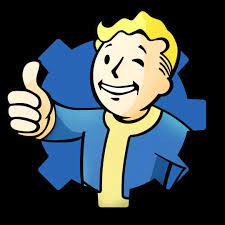
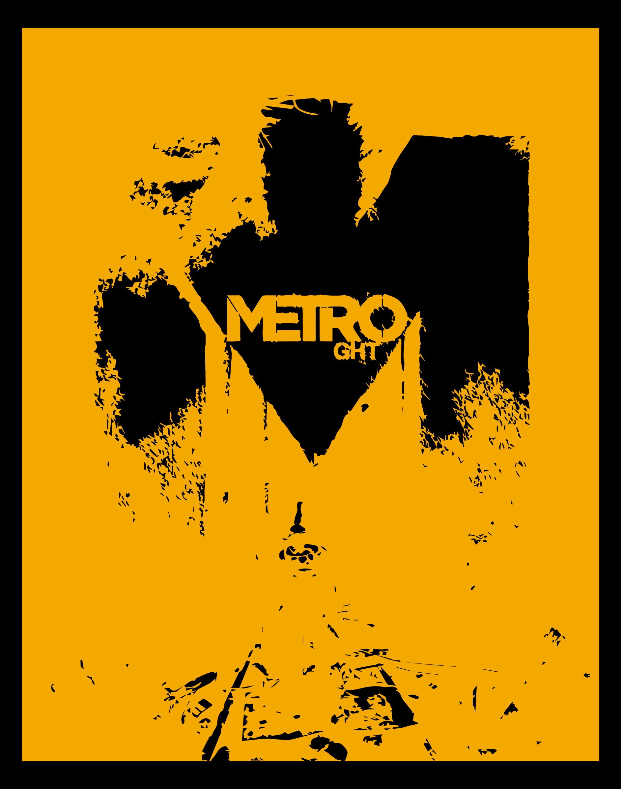
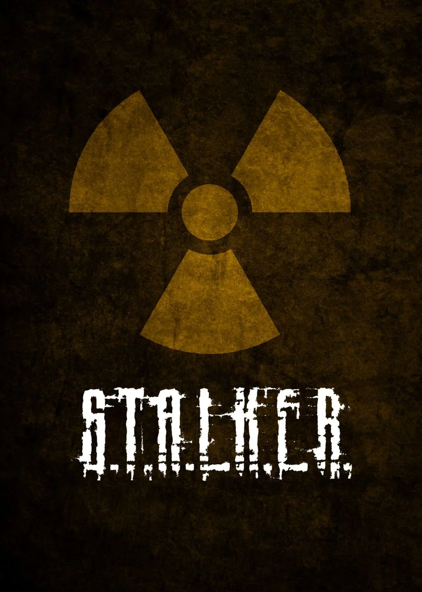
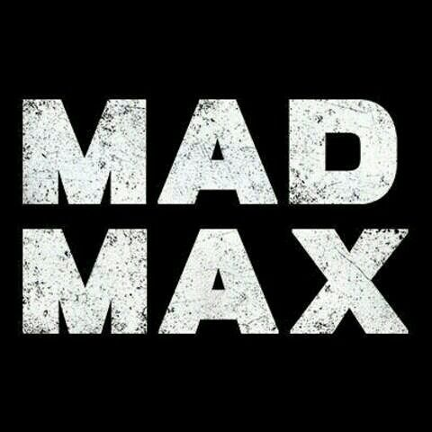

Juegos Post Apocalípticos
En QUE_JUGAR te recomendamos 4 sagas que puedes jugar si te gustan los videojuegos Post Apocalípticos.
La Saga Fallaut
La saga Fallout es una serie de videojuegos de rol ambientada en un mundo postapocalíptico. En estos juegos, los jugadores exploran paisajes devastados por la guerra nuclear, interactúan con personajes supervivientes y enfrentan desafíos mientras buscan recursos y luchan por su supervivencia. La trama a menudo gira en torno a facciones en conflicto, tecnología avanzada y misterios ocultos en las ruinas del mundo antiguo. Comprar
La Saga de Meto
La saga Metro se desarrolla en un mundo postapocalíptico tras una guerra nuclear. Los jugadores exploran los oscuros túneles del metro de Moscú, enfrentándose a criaturas mutantes y luchando por la supervivencia. La trama aborda la política de facciones, los misterios del mundo exterior y las decisiones morales. A medida que la serie avanza, los jugadores abandonan los túneles y exploran la superficie de Rusia, enfrentándose a peligros naturales y humanos mientras buscan un nuevo hogar. Comprar
La Saga S.T.A.L.K.E.R
La serie S.T.A.L.K.E.R. es una saga de juegos de acción en primera persona desarrollada por GSC Game World, ambientada en una versión alternativa de la Zona de Exclusión de Chernóbil después de un desastre nuclear. Los jugadores asumen el papel de "Stalkers", exploradores que buscan artefactos valiosos en la Zona, enfrentándose a peligros mutantes y humanos. La serie consta de tres juegos principales: "Shadow of Chernobyl" (2007), "Clear Sky" (2008) y "Call of Pripyat" (2010), cada uno con su propia historia y enfoque en la exploración, el combate y la interacción con facciones en un mundo postapocalíptico. Comprar
Mad Max
En un mundo postapocalíptico devastado, Max Rockatansky, un ex oficial de patrulla de carreteras conocido como Mad Max, busca venganza contra Scabrous Scrotus, quien roba y destruye su amado V8 Interceptor. Max se une a Chumbucket, un hábil mecánico, para construir el Magnum Opus, un vehículo personalizado. Juntos, exploran un vasto desierto, luchan contra pandillas de saqueadores y buscan la legendaria "Llanura del Silencio" en busca de paz y redención. El juego se centra en el combate vehicular y la exploración de un mundo abierto lleno de peligros y oportunidades. Comprar